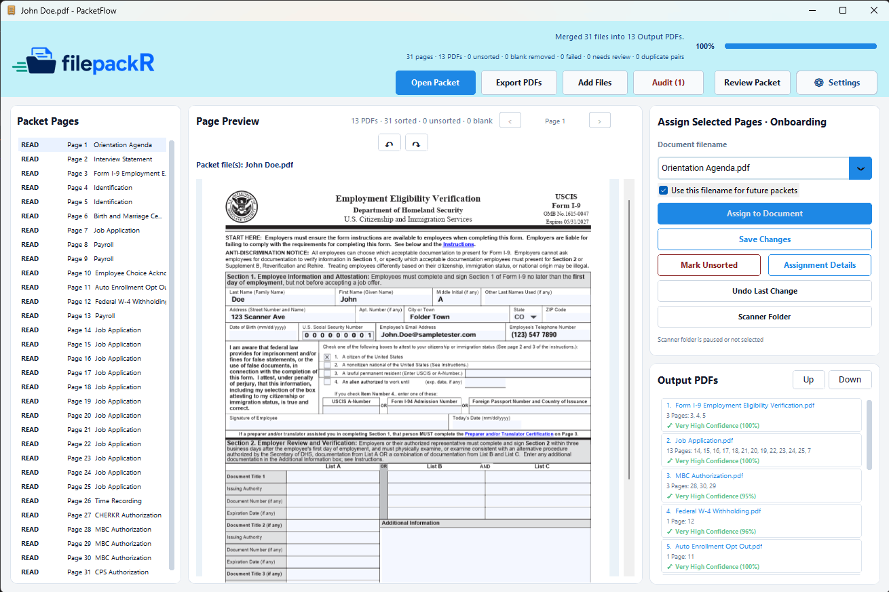

Paper stack scanning and organization
Turn mixed paper stacks into organized digital records, group related pages, prepare outputs, and apply consistent filenames automatically.
With filepackR, businesses start with stacks of mixed, disorganized paper. Staff load the papers into the scanner, and filepackR can do the repetitive work someone would normally do by hand: identify each page, group related records, check for issues, name the resulting files, and route each record to the right folder. Users define the rules and process flow in a simple setup, then choose review checkpoints or autopilot processing for workflows that can run end to end.
filepackR combines OCR, configurable document rules, autopilot processing, quality review, and folder checks into a single repeatable process.


filepackR combines page identification, intelligent routing, quality control, folder checks, and configurable business rules in one focused desktop application.
Turn mixed paper stacks into organized digital records, group related pages, prepare outputs, and apply consistent filenames automatically.
Use OCR and customizable rules to identify scanned pages and route organized records through the workflows that keep your business moving.
Check routed folders for missing, duplicate, incomplete, or questionable files and manage routing exceptions from one focused queue.
Run configured paper workflows end to end, or keep checkpoints for blurry, dark, clipped, skewed, low-resolution, suspicious, or uncertain pages.
Connect Outlook workflows to identify certain emails and documents, route them into the correct folders on your drive, and surface uncertain matches.
Search metadata-only activity history, review folder checks and exports, open destination folders, and export filtered CSV summaries.
Need a specialized workflow? We can tailor filepackR around your goals, document types, folder structure, routing logic, review process, and operational requirements.
filepackR is designed to classify, route, and organize files without forcing office staff to become technical users.
Scan mixed paperwork from a desktop scanner. filepackR analyzes pages locally, detects likely document types, and prepares each file for routing.
Choose autopilot for trusted workflows, or confirm assignments, change filenames, resolve uncertain routing decisions, and review quality alerts before records are finalized.
Create clean digital records with consistent filenames, route them into the correct folders, and check records later to catch missing or incomplete documents.
Start with employee onboarding. Expand into additional paperwork types, document libraries, operational teams, and compliance workflows as your organization grows. filepackR is designed to adapt its routing around your existing process instead of forcing your team into a rigid one-size-fits-all system.
Define the documents that are required, optional, conditional, or expected later for each workflow.
Add recognition phrases, edit built-in logic with safeguards, preserve preferred names, and refine how documents are routed over time.
We can adapt filepackR to your goals, document types, folder structure, internal rules, destinations, and review workflow.
Keep sensitive files in your existing folders while filepackR manages metadata and workflow state locally.
The R stands for routing. filepackR is built around IFR, or Intelligent File Routing, to identify, organize, and route files according to the way your business works.
filepackR goes beyond basic PDF splitting. It helps teams turn mixed paper stacks and scanned files into consistently named records, combine related pages, route documents into the right workflows, and run trusted workflows on autopilot when review is not needed.
Separate large scanned batches into individual records without manually rebuilding every file one page at a time.
Combine supporting pages into the correct record so multi-page documents remain complete and easy to audit.
Use configurable workflows to route documents where they belong and surface items that need review or follow-up.
These focused pages explain the main ways filepackR can support paper-heavy teams after scanning.
Identify, group, check, name, and route scanned paper stacks, with autopilot available for configured workflows.
Move scanned records into the right folders with review controls.
Organize hiring paperwork, missing forms, and employee file outputs.
Turn scanner output folders into named, folder-ready records.
Paperwork processing is rarely difficult because of one large task. The real cost comes from dozens of small manual steps repeated across every stack: identify, scan, check, name, route, and review. filepackR turns those steps into a repeatable routing workflow that can run with review checkpoints or on autopilot.
Reduce the repetitive work of identifying pages, separating scans, naming files, moving records, and manually checking folders one document at a time.
Apply consistent rules and filenames so missing files, duplicates, poor scans, and misfiled documents are easier to catch before they create problems.
Turn folder reviews into a repeatable process with targeted audits, checklist-aware findings, and a focused queue for items requiring attention.
Process records locally and keep documents in your existing Windows folders instead of relying on a cloud upload workflow for routine classification.
Capture naming conventions, recognition logic, routing rules, checklists, and review steps inside the software so the process does not depend on one experienced employee.
Let the application handle repeatable work while staff concentrate on the smaller number of items that genuinely need judgment or follow-up.
filepackR started with onboarding and compliance-heavy personnel files, but the same routing model can support many other records-based processes.
Organize hiring paperwork, acknowledgments, payroll records, background-check documents, and supporting forms.
Track recurring requirements, expected-later documents, annual updates, and folders that need follow-up.
Adapt the same rules-based routing system to other paper-heavy processes where consistent naming, folder placement, and audit readiness matter.
filepackR is designed for organizations that handle sensitive paperwork and want practical routing automation while reducing the risk of sending sensitive documents through unsecured cloud workflows.
Continue using the Windows folder structure your team already understands while filepackR routes records into the right destinations.
OCR classification and record review can run on multiple workstations where the application is installed.
Track operational activity without storing OCR text, email bodies, or scanned-document contents in the history view.
See how filepackR can transform repetitive paperwork sorting into cleaner, faster, and more scalable file routing, or discuss a custom routing solution tailored to your business goals.